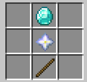
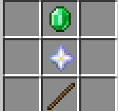
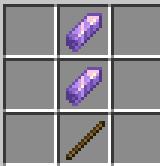
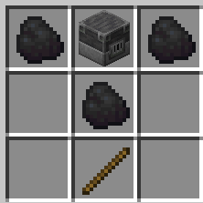

Mod available in Modrinth
dependencies
Fabric Language Kotlin (required)
Fabric API (optional)
Star sword
Deal damage 3-10hp it's use your xp

Rng sword
randomize your damage deal to mob use your xp

Amethyst sword
When player hit mob it highlight mob near player and shockwave:deal damage 1-4 hp depends how far are you

Pickaxe Smelting
